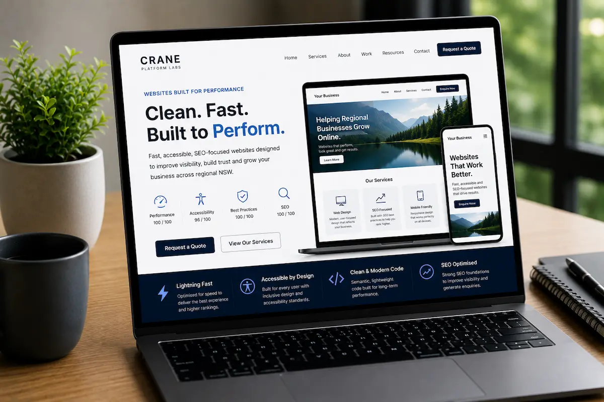
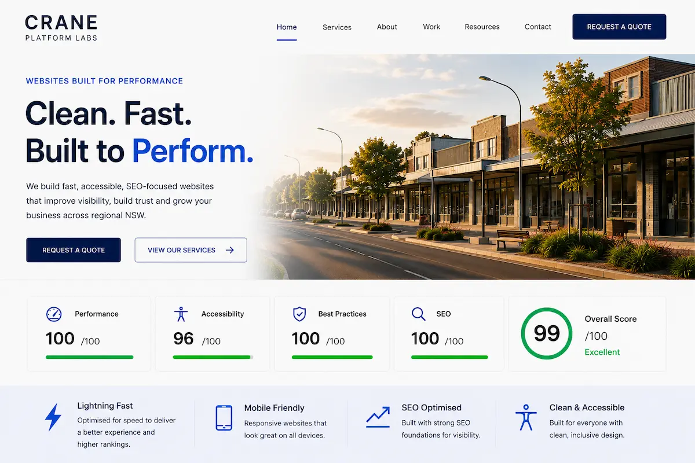

Fast Website Performance
Lightweight website structure, optimised images and clean code help improve loading speeds, mobile usability and overall website performance across desktop and mobile devices.
PERFORMANCE WEBSITE DESIGN
Crane Platform Labs builds fast, SEO-focused and mobile-friendly business websites designed to balance professional design, accessibility, usability and real business performance across regional NSW.
Many modern websites look visually impressive but perform poorly on Google, load slowly on mobile devices and create frustrating user experiences for potential customers.
Our websites are built using clean code, lightweight layouts and SEO-focused structure designed to improve Google visibility, website speed, accessibility and customer enquiries.
We focus on helping businesses across Wagga Wagga, Albury, Griffith, Temora, Junee and regional NSW build websites that not only look professional but also perform properly across Google Search, mobile devices and modern web standards.
From local business websites and tourism websites to service businesses and regional NSW companies, we design websites that support long-term online visibility and business growth.


MODERN WEBSITE DESIGN
Professional business websites should balance modern visual design with fast loading performance, accessibility, mobile usability and strong SEO foundations.
At Crane Platform Labs, we can absolutely build visually advanced, highly interactive and animation-heavy websites — and we genuinely enjoy creating them for businesses wanting larger custom digital experiences.
However, many small businesses across regional NSW often benefit more from lightweight, SEO-focused and mobile-friendly websites designed to load quickly, perform properly across all devices and generate real customer enquiries.
Large custom builds with advanced animations, video backgrounds and complex functionality can significantly increase development costs, maintenance requirements, page complexity and overall website load times.
Our approach focuses on balancing modern website design with accessibility, usability, fast performance and long-term business value while maintaining a clean, professional and user-friendly experience.
This helps businesses improve Google visibility, customer trust, mobile usability, accessibility compliance and overall website performance without sacrificing modern visual quality.
WHY WEBSITE PERFORMANCE MATTERS
Modern websites are no longer judged only by visual appearance. Website speed, accessibility, mobile usability, technical structure and SEO performance now play a major role in Google visibility, customer trust and long-term business growth.
At Crane Platform Labs, we focus on building websites designed to perform properly across Google Search, mobile devices and modern web standards while maintaining a clean, professional and user-friendly experience.
Lightweight website structure, optimised images and clean code help improve loading speeds, mobile usability and overall website performance across desktop and mobile devices.
Accessible layouts, readable content structure and user-friendly navigation help create better experiences for all visitors while supporting modern accessibility and usability standards.
Clean semantic HTML, responsive layouts, optimised media and structured page hierarchy help improve browser compatibility, maintainability and overall website quality.
Proper metadata, semantic headings, internal linking and structured page content help businesses improve Google visibility and search engine understanding.
Modern customers browse primarily on phones and tablets, making responsive mobile-friendly website design essential for usability, accessibility and customer enquiries.
Our websites are built to support customer trust, stronger online visibility and long-term business growth without unnecessary complexity or bloated website builders.
From tourism websites and local business websites to regional NSW service businesses, our approach focuses on balancing modern visual design with long-term website performance, accessibility, SEO and usability.
REGIONAL NSW WEBSITE DESIGN
Crane Platform Labs works with businesses across regional NSW, building fast, SEO-focused and mobile-friendly websites designed to improve Google visibility, accessibility, customer trust and online enquiries.
We support businesses across Wagga Wagga, Albury, Griffith, Temora, Junee, Cootamundra and surrounding regional NSW areas with professional website design focused on long-term website performance, usability and modern web standards.
Our websites are built using clean semantic HTML, responsive layouts, accessibility-focused structure and lightweight code designed to support Google Search visibility, mobile usability and strong website performance across all modern devices.
From tourism websites and local service businesses to regional NSW companies and visitor attractions, we focus on building websites that balance modern design, accessibility, SEO and fast loading performance while supporting real business growth online.

GET STARTED
Crane Platform Labs builds fast, SEO-focused and mobile-friendly websites designed to balance professional design, accessibility, usability and long-term business growth across regional NSW.
Our websites are built using clean semantic structure, lightweight code and modern web best practices designed to improve Google visibility, website performance, accessibility and customer trust.
From local business websites and tourism websites to regional NSW service businesses and visitor attractions, we focus on building websites that perform properly across Google Search, mobile devices and modern accessibility standards.
We believe professional websites should not only look modern but also support fast loading performance, strong SEO foundations, mobile usability and long-term online visibility.